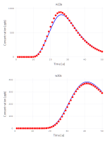

Analysis of contaminant transport in an aquifer
MADS is analyze groundwater contaminant transport.
The analyses below are performed using examples/contamination/contamination.jl.
See also the related Jupyter notebook.
Model setup

There are 20 monitoring wells. Each well has 2 measurement ports: shallow (3 m below the water table labeled a) and deep (33 m below the water table labeled b). Contaminant concentrations are observed for 50 years at each well. The contaminant transport is solved using the Anasol package in MADS.
Unknown model parameters
- Start time of contaminant release $t_0$
- End time of contaminant release $t_1$
- Advective pore velocity $v$
Reduced model setup
Analysis of the data from only 2 monitoring locations: w13a and w20a.

Example model solution

Model parameter values:
\[t_0 = 4\]
\[t_1 = 15\]
\[v = 40\]
Model calibration
A calibration match between observations and model predictions obtained by model inversion:

Prior parameter uncertainties
Probabilistic distributions of the prior parameter uncertainties are:
\[t_0\]
= Uniform(0, 10)\[t_1\]
= Uniform(5, 40)\[v\]
= LogUniform(0.1, 200)
Spaghetti plots representing the prior uncertainties (note that the uncertainties are not constrained by the observed data):

The observation data are plotted as red dots.
Bayesian global sensitivity analysis
Histograms and scatter plots of the Bayesian MCMC results:

Posterior parameter uncertainties
Spaghetti plots representing the posterior uncertainties:

Note that the parameter uncertainties are constrained by the observation data. The observation data are plotted as red dots.
eFAST global sensitivity analysis
eFAST has proven to be one of the most reliable methods among the existing variance-based techniques for quantification of parameter sensitivity (Saltelli, 2004; Saltelli & Bolado, 1998; Saltelli et al., 2000; Saltelli et al., 1999).
Total and main sensitivity indices over time for monitoring wells w13a and w20a:


The differences between main and total effect estimates suggest correlations among the parameters.
Saltelli's global sensitivity analysis
Classical Saltelli's (Sobol's) global sensitivity analysis.
Total and main sensitivity indices over time for monitoring wells w13a and w20a:


There are differences between eFAST & Saltelli estimates. The eFAST results should be considered more reliable.